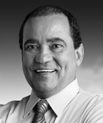

Vicente Alves de Oliveira, conhecido como Vicentinho Jr, nasceu em 1º de outubro de 1957, em Porto Nacional (TO). Filho do piloto e líder político Comandante Vicentão, realizou o sonho de infância ao se tornar aviador profissional, com formação no Rio de Janeiro, estabelecendo-se posteriormente como empresário no setor de aviação no Estado do Pará.
Ingressou na política em 1986, pelo PDT, a convite de Mauro Borges, então candidato ao governo de Goiás. Em 1989, foi eleito prefeito de Porto Nacional. Mais tarde, foi eleito deputado estadual em 1998 e reeleito em 2002, chegando à presidência da Assembleia Legislativa, cargo que o levou a governar o Estado por 15 dias. Em 2006, elegeu-se deputado federal. Em 2010, concorreu ao Senado Federal, ficando em 3º lugar. No entanto, com a cassação da candidatura de Marcelo Miranda, assumiu a vaga de senador do Tocantins em 2011. Durante o mandato, foi Primeiro-Secretário da Mesa Diretora do Senado (2015–2016), responsável pela administração da Casa.
